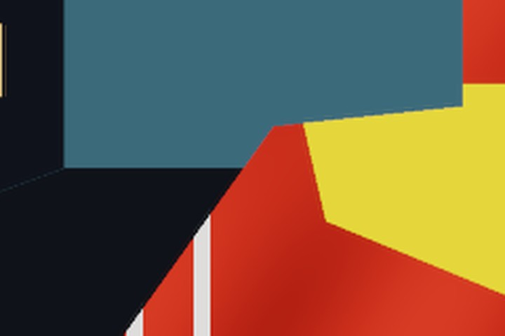
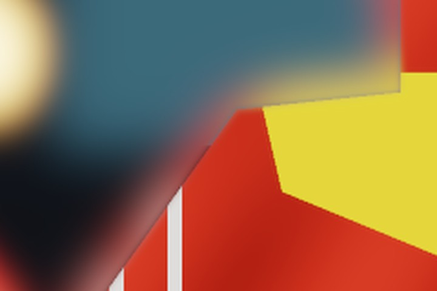
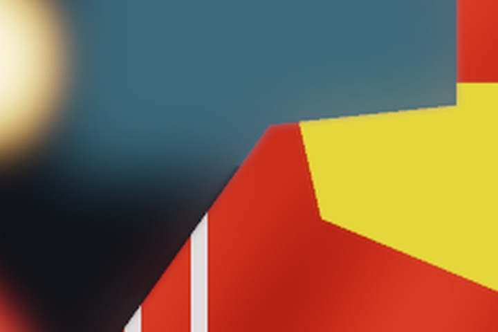
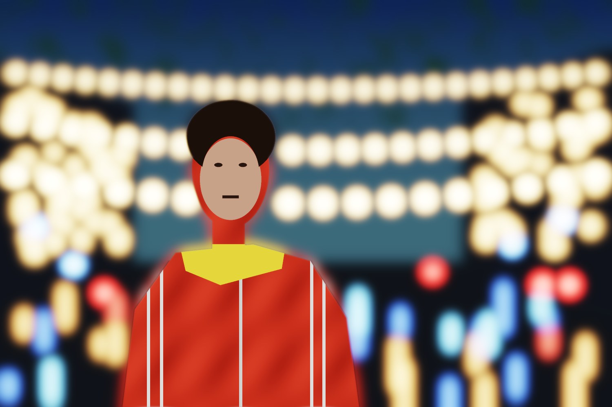

The same picture, the same mask (the inverted Subject, Feather 8), the same Soft blur at Radius 50. Only the switch differs. The picture is the maths of docs/33 §3 applied by blur_ref.py to a synthetic scene.
The edge of the jacket, three times larger

BeforeThe red jacket against the dark street. Nothing blurred.

Off: blur everything, then blend by the maskA red glow spreads from the jacket into the blurred street and shows as a pink rim. The figure's colour is in the background.

On (the default): only the background blursThe street is blurred from street pixels alone. There is no glow; the jacket keeps its sharp edge.
Just outside the silhouette, 27 % of a blurred pixel's colour comes from the figure with the switch off (95th percentile 38 %), and 0 % with it on. Measured by the sketch on this scene, in the ring of 19,879 pixels out to 16 px from the figure.
The whole picture

Off. The yellow box is the crop above.On. The same box.